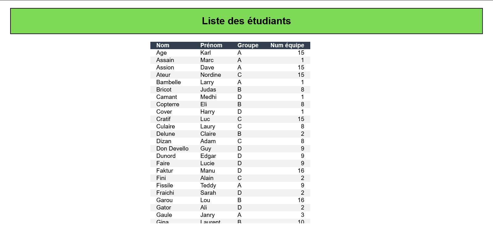
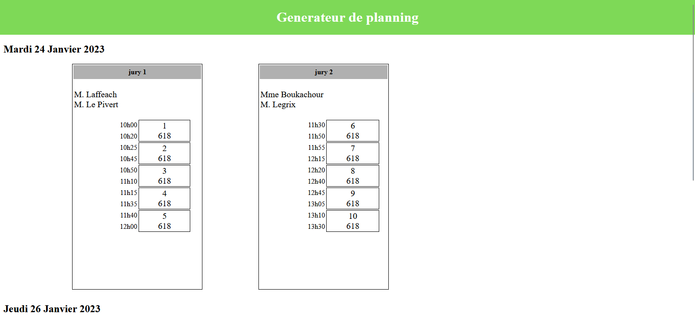
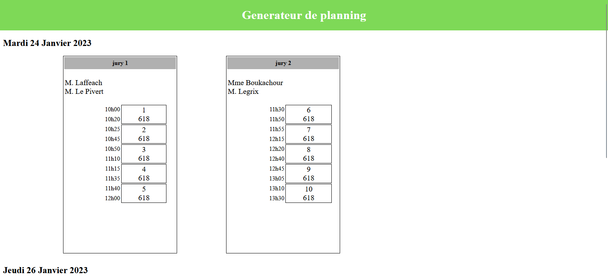

Générations de groupe et d'emploie du temps
Situation
Une SAE relié à d'autre SAE, celle-ci consisté à la réalisation de fichier java qui permet la lecture de différents data,
du traitement de ses informations afin de crée un emploie du temps.
Durant cette SAE, nous étions en groupe de 4. Je n'ai donc pas crée les classes Elèves et Groupe (même si j'ai apporté quelque
modifications par ci par la), j'ai principalement travailler sur le corp de cette SAE (lecture, traitement et autre des fichiers)
mais j'ai aussi fait la génération d'une des pages WEB.
J'ai donc quand même fait une bonne partie du travail.
Lecture et enregistrement de données
Les fichiers data n'était pas très complexe à lire et les informations entré était assurer d'être juste.
Dans l'avenir, je sais que ce genre de donnée deveront être corriger pour éviter certain bug, mais pour l'instant, ce n'est
pas quelque choses sur lequel nous nous sommes penchés.
Traitement des données
La lecture et enregistrement des données une fois fait, il était maintenant temps de les traités. Cette partie à était possible
grace à la réalisation de multiple classe java : un total de 8 classes.

Ces classes nous ont permis de former des groupes, de les placer dans des salles et de les faire passer avec un jury donnée.
Cette générations de groupes, jury, etc... dépends des données du data : les jurys peuvent être différents, ainsi que leur crénaux de passage
la durée de leur oraux, de leur temps de pause, des salles disponible etc...
Affichage des données
Parmis ces 8 classes, 3 d'entre eux sont réservès pour la génération des résultats afin de communiquer plus facilement nos données
à l'utilisateur (ce sont les classes qui commences par list).
Ces informations génèrent des pages Web que doit manuellement lancer l'utilisateur. Cette SAE a été retravailler légérement durant la
SAE 2.03 afin de faire en sorte que l'utilisateur puisse directement visualiser ses données sur un navigateur internet.
Les pages ne paient pas de mine, mais il est important de garder en tête que cela est un vieux projets datant de l'année dernière.

 

Pour voir le code en entier, n'hésitez pas à aller sur répértoire git
SAE 1.01 .